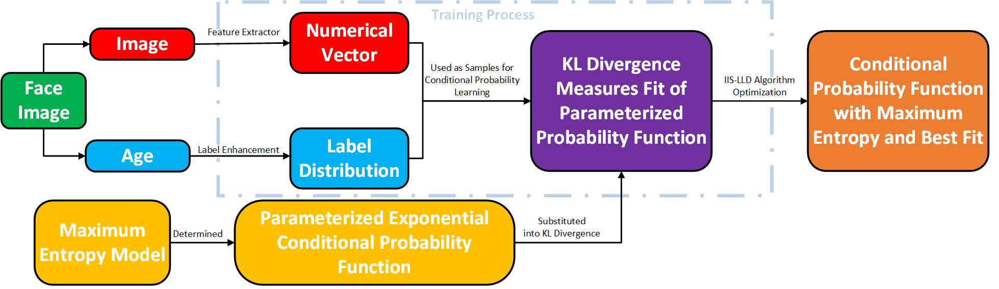
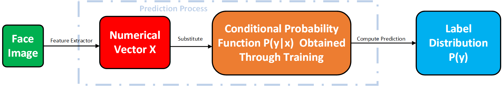
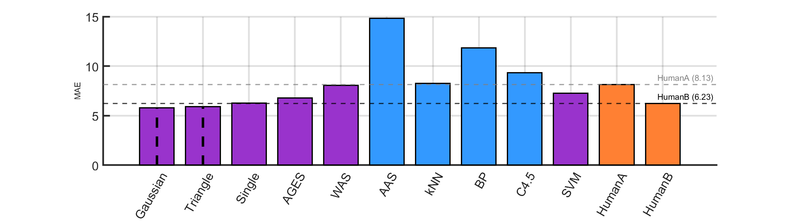
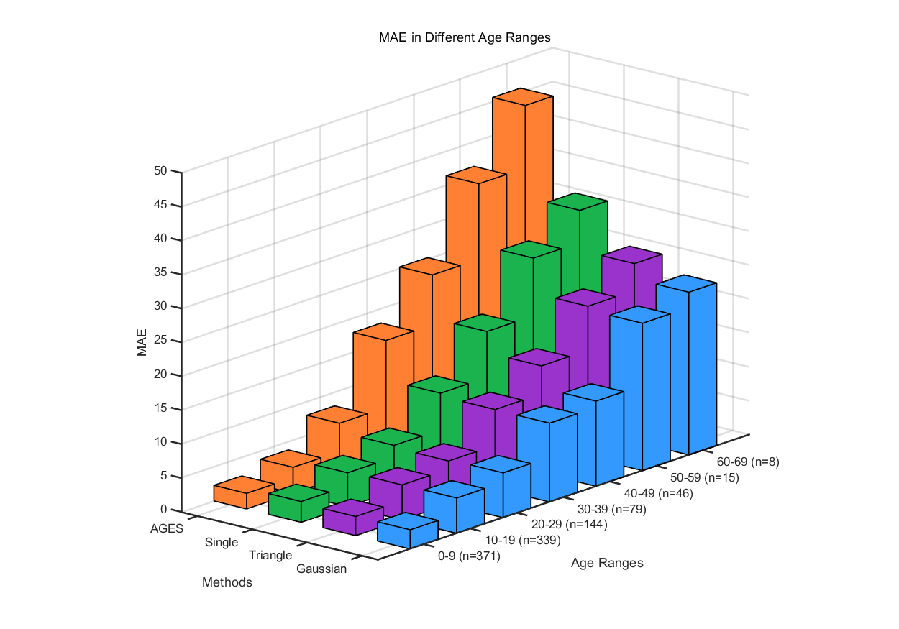

Thorough Analysis | From Single-Label to Label Distribution: A New Approach to Facial Age Estimation
This article provides a detailed analysis of the paper Facial Age Estimation by Learning from Label Distributions by Xin Geng et al., systematically outlining the research framework and deriving the key mathematical models in detail. The analysis process includes defining the concept of label distribution, analyzing the label distribution learning model with the Kullback-Leibler divergence as the objective, deriving the conditional probability function based on the maximum entropy model and its optimization algorithm IIS-LLD, and concluding with a summary of the experimental design and results presented in the paper.
Facial age estimation faces challenges of data sparsity (e.g., lack of samples in higher age groups). Inspired by the continuity of age progression (similar features in adjacent ages), Xin Geng proposed the Label Distribution Learning (LDL) framework: it expands a single age label into a distribution covering neighboring ages, mitigating data deficiency through shared age features, and significantly improving model generalization, especially the accuracy in older age groups.
Define Label Distribution
Label distribution is a generalization of single-label and multi-label learning, and its meaning differs from probability or fuzzy classification, though it is mathematically highly similar to probability. The core concept of label distribution is that each label is a correct description of the sample, but to varying degrees, and the combination of all labels forms a complete description of the sample. Compared to traditional single-label learning, this method better reflects the correlation between categories, making it particularly suitable for continuous variable tasks like age estimation.
Let \(\alpha\) be the original label and \(y\) be a general label. The conversion from single label to label distribution needs to follow two basic principles:
The original label has the highest description degree, i.e., \(P(\alpha)\) should be the maximum value in the distribution.
The farther a label is from the original label, the lower its description degree, i.e., \(P(y)\) decreases as \(|y - \alpha|\) increases.
The label distributions used in the paper are as follows:

Gaussian Distribution, which smoothly reduces the weights of neighboring labels through exponential decay, defined as: \[ P(y) = \frac{1}{Z} \exp \left(-\frac{(y - \alpha)^2}{2\sigma^2} \right) \]
where \(Z\) is the normalization factor and \(\sigma\) controls the spread of the distribution. The Gaussian distribution effectively utilizes information from adjacent labels, ensuring the model captures the continuity of age changes.
Triangle Distribution, which assigns weights to neighboring labels within a fixed range using a linear decay: \[ P(y) = \max \left(0, 1 - \frac{|y - \alpha|}{l} \right) \]
where \(l\) determines the span of the distribution. Compared to the Gaussian distribution, the triangle distribution is more localized, ensuring that labels far from the original have no influence on the model.
Label Distribution Model and Learning Method
Below is the basic structure of modeling and optimization methods in label distribution learning:


Optimization Objective: KL Divergence
Let the input space be $ \mathcal{X} = \mathbb{R}^d $ and the label space be $ \mathcal{Y} = \{ y_1, y_2, \dots, y_c \} $. In traditional classification tasks, each sample $ x_i $ corresponds to only one label. In label distribution learning, however, each sample $ x_i $ is associated with a label distribution $ P_i(y) $, representing the weight of this sample over different labels. The goal is to learn a conditional probability distribution $ p(y|x; \theta) $ that approximates $ P_i(y) $ as closely as possible. KL divergence is used as the evaluation metric:\[ \theta^* = \arg\min_{\theta} \sum_i \sum_y P_i(y) \log \frac{P_i(y)}{p(y|x_i; \theta)} \]
Since \(P_i(y)\) is fixed for training samples, minimizing KL divergence is equivalent to Maximizing Log-Likelihood (MLE): \[ \theta^* = \arg\max_{\theta} \sum_i \sum_y P_i(y) \log p(y|x_i; \theta) \]
The label distribution learning framework is closely related to traditional problems when using KL divergence as the objective function:
- In single-label classification tasks, each sample has only one definite label, i.e., $ P_i(y) = \delta(y, y_i) $. The objective function degenerates into the classic maximum likelihood estimation:
\[ \theta^* = \arg\max_{\theta} \sum_i \log p(y_i | x_i; \theta) \]
- In multi-label classification tasks, each sample $ x_i $ is associated with a label set $ Y_i $. Assuming $ P_i(y) $ is uniformly distributed over multiple labels, the objective function becomes an entropy-weighted label assignment method, transforming multi-label samples into weighted single-label samples and optimizing the maximum likelihood objective:
\[ \theta^* = \arg\max_{\theta} \sum_i \frac{1}{|Y_i|} \sum_{y \in Y_i} \log p(y | x_i; \theta) \]
Conditional Probability Form: Maximum Entropy Model
Maximum Entropy Model
To adjust the parameters and optimize KL divergence, the form of the conditional probability function must be determined. The paper uses the maximum entropy model to obtain the conditional probability function, which is also an optimization problem. The objective function is to maximize entropy, i.e., under the given constraints, the conditional distribution $ p(y|x; \theta) $ should be as uniform as possible, containing the most information and avoiding introducing additional assumptions, thereby improving the model's generalization ability. $$ \max_{p(y|x; \theta)} \sum_{x,y} \tilde{p}(x) p(y|x; \theta) \log p(y|x; \theta) $$ where $p(y|x; \theta)$ is the conditional probability distribution given input $ x $, which is the target distribution to be optimized; $ \tilde{p}(x,y) $ is the empirical joint distribution estimated from the training data; $ \tilde{p}(x) $ is the empirical marginal distribution, i.e., $ \tilde{p}(x) = \sum_y \tilde{p}(x,y) $; $ f_k(x,y) $ is the feature function, representing some feature between input $ x $ and class $ y $; and $\theta$ is the model parameter that determines the form of the conditional probability distribution.The maximum entropy model has two constraints:
- Expectation constraint of feature functions, requiring the expected value of the model's feature functions to match the training data:
\[ \sum_{x,y} \tilde{p}(x,y) f_k(x,y) = \sum_{x,y} \tilde{p}(x) p(y|x; \theta) f_k(x,y), \quad \forall k. \]
- Probability normalization constraint, ensuring that $ p(y|x; ) $ is a valid probability distribution:
\[ \sum_y p(y|x; \theta) = 1, \quad \forall x. \] Feature functions may seem abrupt, but can be understood this way: if the feature function represents the number of wrinkles on the face, the trained model will, in expectation, align as closely as possible with the wrinkle count in the training samples. In the paper, feature functions are provided by a feature extractor, which is a black box. While its numerical values cannot be directly interpreted, a good feature extractor outputs features that are highly relevant to the target (such as age prediction), so this constraint allows the model to optimally fit those relevant features.
This optimization problem has an analytical solution: \[ p(y|x; \theta) = \frac{1}{Z} \exp\left( \sum_k \theta_k f_k(x,y) \right), \]
where
\[ Z = \sum_y \exp\left( \sum_k \theta_k f_k(x,y) \right). \]
Analytical Solution Derivation
The optimization objective of the maximum entropy model is to maximize conditional entropy:
\[ H(P) = - \sum_{x,y} \tilde{P}(x) P(y|x) \log P(y|x) \]
while satisfying the following constraints:
- Empirical expectation constraint:
\[ E_P(f_i) = E_{\tilde{P}}(f_i), \quad i=1,2,\dots,n \]
- Probability normalization condition:
\[ \sum_y P(y|x) = 1 \]
To do this, we introduce Lagrange multipliers \(w_0, w_1, \dots, w_n\) to construct the Lagrangian function:
\[ L(P,w) = -H(P) + w_0 \left( 1 - \sum_y P(y|x) \right) + \sum_{i=1}^{n} w_i \left( E_{\tilde{P}}(f_i) - E_P(f_i) \right) \]
Expanding this into a specific form:
\[ L(P, w) = \sum_{x,y} \tilde{P}(x) P(y|x) \log P(y|x) + w_0 \left( 1 - \sum_y P(y|x) \right) \]
\[ + \sum_{i=1}^{n} w_i \left( \sum_{x,y} \tilde{P}(x,y) f_i(x,y) - \sum_{x,y} \tilde{P}(x) P(y|x) f_i(x,y) \right) \]
Taking the partial derivative with respect to \(P(y|x)\):
\[ \frac{\partial L(P,w)}{\partial P(y|x)} = \tilde{P}(x) \left[ \log P(y|x) + 1 \right] - \tilde{P}(x) \sum_{i=1}^{n} w_i f_i(x,y) - w_0 \]
Setting the partial derivative to zero:
\[ \log P(y|x) + 1 = \sum_{i=1}^{n} w_i f_i(x,y) + w_0 \]
Thus:
\[ P(y|x) = \exp \left( \sum_{i=1}^{n} w_i f_i(x,y) + w_0 - 1 \right) \]
Since \(P(y|x)\) needs to satisfy the normalization condition:
\[ \sum_y P(y|x) = 1 \]
We normalize \(P(y|x)\):
\[ \sum_y \exp \left( \sum_{i=1}^{n} w_i f_i(x,y) + w_0 - 1 \right) = 1 \]
Defining the normalization factor:
\[ Z(x) = \sum_y \exp \left( \sum_{i=1}^{n} w_i f_i(x,y) \right) \]
Thus:
\[ \exp (w_0 - 1) = \frac{1}{Z(x)} \]
Substituting into the expression for \(P(y|x)\):
\[ P(y|x) = \frac{\exp \left( \sum_{i=1}^{n} w_i f_i(x,y) \right)}{Z(x)} \]
Finally, we obtain the analytical solution for the maximum entropy model:
\[ P(y|x) = \frac{\exp \left( \sum_{i=1}^{n} w_i f_i(x,y) \right)}{Z(x)} \]
where:
\[ Z(x) = \sum_y \exp \left( \sum_{i=1}^{n} w_i f_i(x,y) \right) \]
This shows that the maximum entropy model has an exponential form, i.e., an exponential family distribution, where \(w_i\) are the parameters to be optimized.
If you're attentive, you may notice that during the derivation, the analytical solution is substituted into the probability normalization constraint to determine the parameter \(w_0\). Why don't we substitute the expectation equality constraint to determine the \(w_i\)? Could we still ensure the expectation equality? Here's an interpretation: without the feature function expectation constraint, the final model would be a uniform distribution in the maximum entropy sense. When this constraint is added, it leads to an exponential distribution function. The expectation constraint serves as a "data-driven prior" that shapes the distribution, guiding the model on how to use data features. It acts as a "soft constraint," defining the distribution's shape and forcing the model to match the statistical properties of the data, while allowing some flexibility in adjustment.
Optimization Algorithm: IIS-LLD
Objective Function
Substituting the obtained exponential conditional probability function into the KL divergence expression results in: \[ T(\theta) = \sum_{i} \sum_{y} P_i(y) \log \left( \frac{1}{Z(x_i)} \exp \left( \sum_k \theta_{y,k} g_k(x_i) \right) \right) \] Expanding the logarithm: \[ T(\theta) = \sum_{i} \sum_{y} P_i(y) \sum_k \theta_{y,k} g_k(x_i) - \sum_i \sum_{y} P_i(y) \log Z(x_i) \]
Since \(Z(x_i)\) is independent of \(y\), and \(P_i(y)\) summed over \(y\) equals 1: \[ \sum_{y} P_i(y) \log Z(x_i) = \log Z(x_i) \sum_y P_i(y) = \log Z(x_i) \] Thus: \[ T(\theta) = \sum_{i} \sum_{y} P_i(y) \sum_k \theta_{y,k} g_k(x_i) - \sum_i \log Z(x_i) \] Expanding \(Z(x_i)\):
\[ T(\theta) = \sum_{i} \sum_{y} P_i(y) \sum_k \theta_{y,k} g_k(x_i) - \sum_i \log \sum_y \exp \left( \sum_k \theta_{y,k} g_k(x_i) \right) \]
Objective Function Increment Lower Bound Derivation
We want to maximize the objective function: \[ T(\theta) = \sum_{i,y} P_i(y) \sum_k \theta_{y,k} g_k(x_i) - \sum_i \log Z(x_i) \] where: \[ Z(x_i) = \sum_y \exp \left( \sum_k \theta_{y,k} g_k(x_i) \right) \]
Define the parameter update: \[ \theta^{(t+1)} = \theta^{(t)} + \Delta \] where the increment is: \[ \delta_{y,k} = \theta_{y,k}^{(t+1)} - \theta_{y,k}^{(t)} \]
The normalized factor after the increment: \[ Z^*(x_i) = \sum_y \exp \left( \sum_k (\theta_{y,k} + \delta_{y,k}) g_k(x_i) \right) \]
The increment of the objective function: \[ T(\theta + \Delta) - T(\theta) = \sum_{i,y} P_i(y) \sum_k \delta_{y,k} g_k(x_i) - \sum_i \log \frac{Z^*(x_i)}{Z(x_i)} \]
Computing the latter term: \[ \frac{Z^*(x_i)}{Z(x_i)} = \frac{\sum_y \exp \left( \sum_k (\theta_{y,k} + \delta_{y,k}) g_k(x_i) \right)} {\sum_y \exp \left( \sum_k \theta_{y,k} g_k(x_i) \right)} \]
Extracting the original normalization term: \[ \frac{Z^*(x_i)}{Z(x_i)} = \sum_y \frac{\exp \left( \sum_k \theta_{y,k} g_k(x_i) \right)}{Z(x_i)} \exp \left( \sum_k \delta_{y,k} g_k(x_i) \right) \]
Since: \[ p(y | x_i; \theta) = \frac{\exp \left( \sum_k \theta_{y,k} g_k(x_i) \right)}{Z(x_i)} \]
Thus: \[ \frac{Z^*(x_i)}{Z(x_i)} = \sum_y p(y | x_i; \theta) \exp \left( \sum_k \delta_{y,k} g_k(x_i) \right) \]
Using logarithmic inequalities for scaling: \[ -\log x \geq 1 - x \]
Applying this to the objective function increment: \[ -\sum_i \log \sum_y p(y | x_i; \theta) \exp \left( \sum_k \delta_{y,k} g_k(x_i) \right) \geq \sum_i \left( 1 - \sum_y p(y | x_i; \theta) \exp \left( \sum_k \delta_{y,k} g_k(x_i) \right) \right) \]
Thus: \[ T(\theta + \Delta) - T(\theta) \geq \sum_{i,y} P_i(y) \sum_k \delta_{y,k} g_k(x_i) + n - \sum_i \sum_y p(y | x_i; \theta) \exp \left( \sum_k \delta_{y,k} g_k(x_i) \right) \]
Next, we continue the scaling using Jensen's inequality:
Define: \[ g^\#(x_i) = \sum_k |g_k(x_i)| \]
Since the exponential function is convex, according to Jensen's inequality, let $ s(g_k(x_i)) $ be the sign function of $ g_k(x_i) $: \[ \sum_k \frac{|g_k(x_i)|}{g^\#(x_i)} \exp \left( \delta_{y,k} s(g_k(x_i)) g^\#(x_i) \right) \geq \exp \left( \sum_k \frac{|g_k(x_i)|}{g^\#(x_i)} \delta_{y,k} g^\#(x_i) \right) \]
That is: \[ \sum_k \frac{|g_k(x_i)|}{g^\#(x_i)} \exp \left( \delta_{y,k} s(g_k(x_i)) g^\#(x_i) \right) \geq \exp \left( \sum_k \delta_{y,k} |g_k(x_i)| \right) \]
Reversing the direction: \[ -\exp \left( \sum_k \delta_{y,k} |g_k(x_i)| \right) \geq -\sum_k \frac{|g_k(x_i)|}{g^\#(x_i)} \exp \left( \delta_{y,k} s(g_k(x_i)) g^\#(x_i) \right) \]
Substitute this back into the previous lower bound: \[ T(\theta + \Delta) - T(\theta) \geq \sum_{i,y} P_i(y) \sum_k \delta_{y,k} g_k(x_i) + n - \sum_{i, y} p(y | x_i; \theta)\sum_k \frac{|g_k(x_i)|}{g^\#(x_i)} \exp \left( \delta_{y,k} s(g_k(x_i)) g^\#(x_i) \right) \]
We define the right-hand side expression as: \[ \mathcal{A}(\Delta | \theta) = \sum_{i,y} P_i(y) \sum_k \delta_{y,k} g_k(x_i) + n - \sum_{i, y} p(y | x_i; \theta)\sum_k \frac{|g_k(x_i)|}{g^\#(x_i)} \exp \left( \delta_{y,k} s(g_k(x_i)) g^\#(x_i) \right) \]
Thus: \[ T(\theta + \Delta) - T(\theta) \geq \mathcal{A}(\Delta | \theta) \]
IIS-LLD Algorithm
\(T(\theta)\), through scaling via Jensen's inequality, makes \(\mathcal{A}(\Delta | \theta)\) independent in each dimension, allowing for independent optimization of each dimension.
The optimization process is to take the derivative of \(\mathcal{A}(\Delta | \theta)\) and set the gradient to zero, obtaining the increment for each dimension:
\[ \frac{\partial \mathcal{A}(\Delta | \theta)}{\partial \delta_{y,k}} = \sum_{i} P_i(y) g_k(x_i) - \sum_{i} p(y | x_i; \theta) g_k(x_i) \exp(\delta_{y,k} s(g_k(x_i)) g^\#(x_i)) = 0. \]
This equation can be solved numerically (e.g., using Gauss-Newton method) to find the increment \(\delta_{y,k}\) for each dimension, and ultimately complete the iterative update. The algorithm flow is as follows:

The classic IIS algorithm requires feature functions to be non-negative. To ensure flexibility in the label distribution model, the paper removes this restriction, hence the algorithm is named IIS-LLD. From an algorithmic perspective, this still leads to the final solution, but from a numerical method perspective, it may introduce instability risks.
Experiments and Result Analysis
The experiments were conducted using the FG-NET Aging Database, which contains 1002 facial images from 82 subjects, with ages ranging from 0 to 69 years. Each subject has between 6 and 18 photos, and the dataset includes variations in lighting, facial expressions, and head poses. Due to the limited number of elderly samples, the researchers adopted Leave-One-Person-Out (LOPO) cross-validation, in which all photos of one subject are used as the test set, and the remaining subjects' photos are used for training. This process is repeated 82 times to compute the final result. The evaluation metric is Mean Absolute Error (MAE), which measures the average absolute error between the predicted and actual ages.
The feature extraction method is based on the Appearance Model. The model first detects facial landmarks, then applies PCA (Principal Component Analysis) to reduce the dimensionality of the landmark coordinates. The face image is then normalized to a standard shape, and PCA is applied again to extract texture features from the standardized grayscale image. Finally, shape and texture features are combined into a single feature vector. In PCA dimensionality reduction, the researchers retained 95% of the data variability, selecting the first 200 principal components.
The following are the methods used in the experiments and their corresponding key parameters:
| Method | Key Parameters |
|---|---|
| IIS-LLD (Gaussian) | Gaussian distribution, standard deviation \( \sigma = 1 \) |
| IIS-LLD (Triangle) | Triangle distribution, base length \( l = 6 \) |
| IIS-LLD (Single) | Traditional single label, only true age used |
| AGES | Aging pattern subspace dimension = 20 |
| WAS | No parameter setting required |
| AAS | Error threshold = 3, age groups = (0–9, 10–19, 20–39, 40–69) |
| KNN | Number of neighbors \( K = 30 \) |
| BP (Neural Network) | Hidden layer neurons = 100 |
| C4.5 (Decision Tree) | Using J4.8 version, default parameters |
| SVM | Kernel: RBF, kernel width = 1 |
| HumanA (Grayscale Image) | Only shows grayscale face with background removed |
| HumanB (Color Image) | Shows full color image including hair, clothing, background, etc. |
The experimental results are shown below. Purple bars indicate better performance than HumanA, and vertical dashed lines indicate better performance than HumanB:

From the figure, we can see that even without using label distribution, the IIS-LLD algorithm already performs very well. This is thanks to the good properties of the maximum entropy model. Label distribution adds further benefits, enabling the algorithm to outperform HumanB. The Gaussian distribution covers all ages, the triangle distribution only covers neighboring ages, and single label only covers the exact age — their performance gradually decreases in that order.
The paper also adjusted the parameters \(\sigma\) and \(l\) for the two types of label distributions and tested the corresponding MAE. The results are as follows:

A larger parameter means a more dispersed distribution. When the parameter is 0 for both distributions, they degenerate into single-label learning. A balance must be maintained so that nearby labels contribute to the true label without overwhelming it, in order to achieve optimal performance.
The following shows a visualization of the MAE across different age groups for the three IIS-LLD algorithms and the best-performing baseline method AGES. "n" indicates the number of samples in that age group.

In age groups with sufficient data (younger ages), the IIS-LLD model slightly underperforms the specialized AGES model. However, in older age groups with sparse data, the IIS-LLD model significantly outperforms AGES. This validates the paper’s idea of using label distribution to compensate for the lack of data.
Finally, the authors highlight three scenarios where label distribution is valuable, especially in addressing label uncertainty and data scarcity:The initial label of the instance is itself a distribution over classes; There is strong correlation among classes; Labels from different sources are inconsistent or disputed.